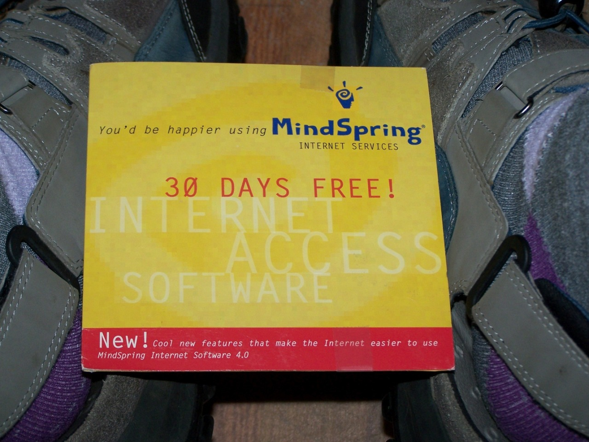
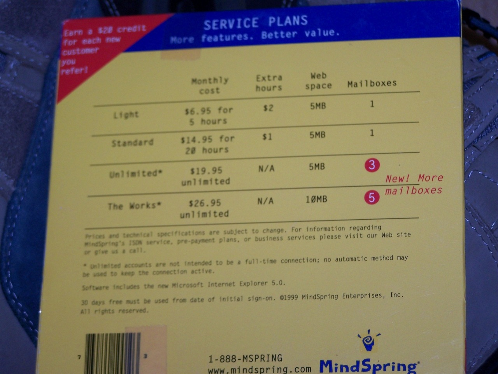

Unopened CD from MindSpring, 1999. At the time they had 3 million customers; they merged with Earthlink in February 2000 (also having 3 million customers) to form one big happy family. By 2004 they’d gotten rid of all 7 call centers in the United States in favor of outsourcers; as soon as broadband offered by cable and telephone providers became the standard, and webmail providers became more popular than boxes offered with accounts, the whole company became pretty much irrelevant.
Dig those price tiers!